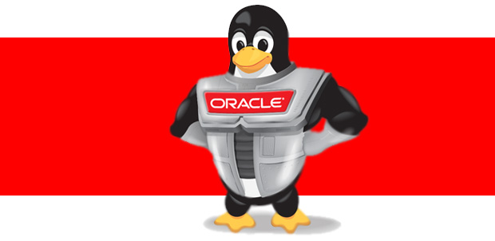

Create your first Linux machine using the $300 credits
The below instructions will take you throug a step by step guide in creating your first linux instance
Purpose
This tutorial shows you how to create an Oracle Linux instance in Compute Classic. In this tutorial, you'll create an instance from an Oracle-provided Oracle Linux image and boot the instance from a persistent disk. You'll add an interface to an IP network that you create. You'll also add the instance to the shared network and accept the default settings to enable SSH access to the instance using an SSH key that you provide. After creating the instance, you can also set up a security rule to enable HTTP access to the instance on port 80.
Note: Although you'll add one interface to an IP network, this tutorial doesn't cover the steps required to configure access to that interface using security rules and access control lists in IP networks. In this tutorial, you'll access the public IP address of your instance on the shared network.
Time to Complete
15 minutes
Background
You can use Compute Classic to rapidly provision virtual machines with storage and networking resources to meet your requirements.
What Do You Need?
To perform the steps in this tutorial, you must have a subscription to Compute Classic. You must be a user with the Compute_Operations role. See How to Begin with Compute Classic Subscriptions in Using Oracle Cloud Infrastructure Compute Classic.
One of the following tools for generating SSH key pairs:
- On Windows: PuTTY (http://www.putty.org)
- On UNIX or UNIX-like machines: The ssh-keygen utility. Many UNIX and UNIX-like installations already include ssh-keygen. To see it's installed on your machine, run the ssh-keygen command. If it isn't available, then obtain OpenSSH from http://www.openssh.com/portable.html.
Process
To create an Oracle Linux instance in Compute Classic and set up HTTP access to the instance, you must complete the following tasks
1. Generate an SSH key pair on your local system
2. Launch the Create Instance wizard from the web console to create your instance.
You can complete the following tasks before you launch the Create Instance wizard, or you can complete each of these tasks directly from within the Create Instance wizard while creating your instance:
- Add your SSH public key to your Compute Classic account.
- Create an IP network.
- Create an IP reservation to assign a permanent public IP address to the interface on the shared network.
- Create security lists to control traffic to and from your instance on the shared network.
- Create storage volumes to attach to your instance.
This tutorial assumes that you haven't completed these tasks before launching the Create Instance wizard. You'll perform the required tasks from within the Create Instance wizard.
After creating your instance, you'll do the following:
- Log in to your instance using your SSH private key.
- Mount a storage volume on your instance.
- (Optional) Configure the instance for HTTP access.
Generating a SSH Key Pair
When you create an Oracle Linux instance in Compute Classic, you must provide an SSH public key that will be used for authentication when you log in to the instance. Generate your SSH key pair before you start to create your instance.
Note: Use your keys generated on UNIX-like systems to log in from UNIX-like local hosts, and use your keys generated on Windows to log in from a Windows local host. Attempting to do otherwise may result in an inability to log in. For example, you can't connect to an instance from a Linux command line using a key generated by PuTTY Generator in Windows - the connection attempt fails.
Generating an SSH Key Pair on UNIX or UNIX-Like Systems Using ssh-keygen
-
Run the
ssh-keygencommand.ssh-keygen -b 2048 -t rsa -
The command prompts you to enter the path to the file in which you want to save the key. A default path and file name are suggested in parentheses. For example:
/home/user_name/.ssh/id_rsa.To accept the default path and file name, press Enter.
Otherwise, enter the desired path and file name, and then press Enter.
-
The command prompts you for a passphrase. Enter a passphrase.
Note that the passphrase isn't displayed when you type it in. Remember the passphrase. If you forget the passphrase, you can't recover it.
-
When prompted, enter the passphrase again to confirm it.
The command generates an SSH key pair consisting of a public key and a private key, and saves them in the specified path. The file name of the public key is created automatically by appending .pub to the name of the private key file. For example, if the file name of the SSH private key is id_rsa, then the file name of the public key would be id_rsa.pub.
N.B Make a note of the path where you've saved the SSH key pair. When you create instances, you must provide the SSH public key. When you log in to an instance, you must specify the corresponding private key and enter the passphrase when prompted.
Generating an SSH Key Pair On Windows Using the PuTTY Key Generator
-
Find
puttygen.exein the PuTTY folder on your computer, and double-click it. -
Use the default key type, RSA (Note: this is named SSH-2 RSA in some versions of PuTTY Key Generator), with the Number of bits in a generated key set to 2048. Then click Generate.

-
Move your mouse around the blank area to generate randomness. PuTTY Key Generator generates the key pair.

-
Save your private key.
-
The key comment is the name of the key. You can keep the generated key comment or create your own.
-
Enter a passphrase in the Key passphrase and the Confirm passphrase fields.
Note: Remember the passphrase. You can't recover a passphrase if you forget it.
-
To save the private key in the PuTTY PPK format, click Save private key.
Enter the same name as you used for the key comment, so that you know which public key to use this private key with. The private key is saved in PuTTY's Private Key (PPK) format, which is a proprietary format that works only with the PuTTY toolset. You can use this key whenever you use PuTTY for SSH.

-
-
Next, save your SSH public key.
-
In the PuTTY Key Generator, click anywhere in the Public key for pasting into OpenSSH authorized_keys file: field, right-click and choose Select All from the menu.

Note: If you select the characters manually, make sure that you select all the characters in the public key, not just the ones you can see in the narrow window. If there is a scroll bar next to the characters, you aren't seeing all the characters.
-
Right-click somewhere in the selected text and select Copy from the menu.

-
Open a text editor and paste the characters. Ensure that you paste the text at the first character in the text editor, and don't insert any line breaks.
-
Save the key using the same root file name that you used for the private key. You can use any extension that you want, but using the
.pubextension is a useful convention to indicate that this file contains a public key. -
Exit PuTTY Key Generator.
-
-
Make a note of the names of the public and private key files and where they are saved. When you create Oracle Linux instances, you must specify a SSH public key to use for authentication. When you log in to an Oracle Linux instance, you must provide the path to the corresponding SSH private key and enter the passphrase when prompted.
Create an instance with the create instance wizard
-
-
Sign in to the Oracle Cloud My Services application at https://cloud.oracle.com/sign_in. The My Services Dashboard page is displayed.
-
Click the
 menu at the upper left corner of the page and select Compute Classic.
menu at the upper left corner of the page and select Compute Classic.The Compute Classic console is displayed.
-
On the Instances page, click Create Instance.
The Create Instance wizard starts.
-
On some sites, the Create Instance wizard displays a set of QuickStart instances. This tutorial focuses on creating a custom instance, which you can do from the QuickStarts page by clicking the Customize button and completing the steps that follow.

-
On the Image page, select the image that you want to use. For the purpose of this tutorial, select OL_6.4_UEKR4_x86_64. Click the button to go to the next page.

-
On the Shape page, select an appropriate shape for your instance. The shape determines the number of CPUs and RAM that your instance will have. For the purpose of this tutorial, select oc3 (OCPUs: 1, Memory: 7.5 GB). Click the button to go to the next page.

- On the Instance page, select or enter the following, and then click the button to go to the next page.
- High Availability Policy: Retain the default setting, Active.
- Name: Enter an appropriate name, or retain the default.
- Label: Enter a label to help identify the instance, or retain the default. The label is used to list the instance on the Instances page.
- Description: Enter a description, if required.
- Tags: Specify a tag to help identify your instance, if required.
- SSH Keys: Click this field or start typing to see a list of available SSH public keys. To add a new SSH public key:
- Click Add SSH Public Key.
- Enter a name for the SSH public key.
- Click Select File and navigate to the folder where your SSH public key is saved, or paste the public key in the Value field.
- Click Add.
-
Custom Attributes: This field allows you to customize your instance by providing additional information specific to each instance. For example, you might have specified certain scripts in the custom machine image that you use to boot your instance. Such scripts could require instance-specific user data. You can enter that instance-specific user data in this field, in JSON format. The information that you enter here is stored as user data on your instance. After the instance is created, the attributes that you specify here are available within the instance at http://192.0.0.192/latest/userdata.
For the purpose of this tutorial, leave this field blank.

8. On the Network page, to accept the default settings for the shared network and add an interface to an IP network, enter or select the following. When you're done, click the button to go to the next page.
- DNS Hostname Prefix: Enter a string that will be used as a prefix in the domain host name for your instance. For the purpose of this tutorial, you can leave this blank.
- Network Options: Select whether you want to configure an interface on the shared network or one or more interfaces on IP networks. Select both options.
- IP Network Options
Click Configure Interface. In the Configure IP Network Interface dialog box, select or enter the following and then click Save:
- Interface: Select the interface that you want to add to the specified IP network. You can select any interface from eth0 to eth7. After you select all the interfaces that you want to add to IP networks, the first available interface is assigned to the shared network. You can't add, delete, or modify interface allocations after an instance is created.
For this tutorial, select eth1.
- vNIC Name: Retain the default vNIC name or enter another name. The name you enter can contain a maximum of four characters. The three-part vNIC name is generated using this name. It has the format /Compute-identity_domain/username/instanceName_vnicName. For this tutorial, retain the default vNIC name.
- IP Network: Specify the IP network that you want to add this interface to. When you add an instance to an IP network, the specified interface of the instance is assigned an IP address on the specified IP network. After the instance is created, you can view information about each interface on the Instance Details page.
If you haven't created the IP network that you want to add your instance to, you can do so now.
- Click Create IP Network.
- Enter a name for the IP network. For this tutorial, enter IPnet1.
- Enter the required IP address prefix for the IP network, in CIDR format. For example, enter 192.168.0.1/24.
- You can select an IP exchange to add this IP network to. For this tutorial, leave this field blank.
- Enter a description and tags for the IP network, if required, and then click Create. The IP network is created and selected in the IP Network field.
- Static IP Address: You can specify a private IP address for this interface. The private IP address must be unused and it must belong to the subnet of the selected IP network. Remember, too, that certain IP addresses in a subnet are reserved. For example, the first unicast IP address of any IP network is reserved for the default gateway, the DHCP server, and the DNS server of that IP network.
If no static IP address is specified, an IP address from the specified IP network is allocated dynamically, when the instance is created. Dynamically allocated IP addresses might change if the instance is shut down and restarted, or deleted and re-created.
For this tutorial, leave this field blank.
-
Public IP Address: You can select an available public IP address for this interface. When the instance is created, you can configure security rules and access control lists for your IP network to enable access to this IP address over the public Internet. If you don't select an IP reservation now, you can associate a public IP address with this interface later by creating or updating an IP reservation.
For this tutorial, leave this field blank.
-
Cloud IP Address: You can select an available cloud IP reservation for this interface. When the instance is created, this IP address can be accessed by other Oracle Cloud services without being accessible over the public Internet. If you don't select a cloud IP address now, you can associate a cloud IP address with this interface later by creating or updating an IP reservation.
For this tutorial, leave this field blank.
- MAC Address: You can specify the MAC address of the interface, in hexadecimal format. Ensure that the MAC addresses that you specify are unique within each IP network exchange and each IP network. If you specify a duplicate MAC address, each vNIC with that MAC address is disabled.
For this tutorial, leave this field blank.
- Virtual NIC Sets: You can select the Virtual NIC (vNIC) sets to which to add this interface. By default, each interface is added to the default vNIC set. If you select other vNIC sets to add this interface to, you can remove it from the default vNIC set. However, ensure that you add each interface to at least one vNIC set to enable communication to that interface. After the instance is created, communication with each vNIC depends on the vNIC sets it belongs to and the access control lists that apply to each vNIC set. You can also add or remove vNICs from a vNIC set after the instance is created.
For this tutorial, don't specify any additional vNIC sets. Retain the default vNIC set.
- DNS: You can specify DNS A record names for the instance. You can specify up to eight DNS A record names for each interface on an IP network. These names can be queried by instances on any IP network in the same IP network exchange. If no static IP address is specified for the interface, an IP address on the specified IP network is assigned automatically. After the instance is launched, the defined names are associated with the IP address that was automatically allocated to the interface.
For this tutorial, leave this field blank.
- Name Servers: You can enter the name servers that are sent through DHCP as option 6. You can specify a maximum of eight name server IP addresses per interface.
For this tutorial, leave this field blank.
- Search Domains: You can enter the search domains that should be sent through DHCP as option 119. You can enter a maximum of eight search domain zones per interface.
For this tutorial, leave this field blank.
- Default Gateway: You can select this option if you want to use this interface as the default gateway. However, this option is used only when your instance isn't added to the shared network. When your instance is added to the shared network as well as one or more IP networks, the shared network interface acts as the default gateway. All network traffic uses the specified default gateway, unless a different interface is explicitly configured for an application within the instance.
For this tutorial, don't select this option.
d. Shared Network Options
-
Public IP Address: To associate a permanent public IP address with the instance, select Persistent Public IP Reservation. If you select an autogenerated public IP address, the IP address persists while the instance is running, but will change if you delete the instance and create it again later.
If you've already created an IP address reservation, select it from the list. Otherwise, create one now.
- Click Create IP Reservation.
- In the Create Public IP Reservation dialog box, enter a name for the IP reservation and then click Create.
- Security Lists: You can add your instance to one or more security lists. When you add an instance to a security list, you can control access to or from that instance by creating security rules that use the specified security list as a source or destination. For this tutorial, leave this field set to the "default" security list.
- Interface: Select the interface that you want to add to the specified IP network. You can select any interface from eth0 to eth7. After you select all the interfaces that you want to add to IP networks, the first available interface is assigned to the shared network. You can't add, delete, or modify interface allocations after an instance is created.
9. On the Storage page, to use a persistent boot disk, accept the default settings and click the button to go to the next page.
If you want to attach storage volumes to your instance, then do the following:
-
If you've already created a bootable storage volume or storage volumes for applications and data, then click Attach Existing Volume. In the Attach Existing Storage Volume dialgo box, select or enter the following and then click Add.
- Attach Storage Volume: Select the storage volume that you want to attach.
- Attach as Disk #: Enter a disk index number. The disk number that you specify here determines the device name. The disk attached at index 1 is named /dev/xvdb, the disk at index 2 is /dev/xvdc, the disk at index 3 is /dev/xvdd, and so on.
- Boot Drive: Select this option to use the specified storage volume as the boot disk. The storage volume that you select here must have the same image as the image that you selected on the Image page. When you select this option, the disk number is automatically set to 1.

- To create and attach storage volumes, click Add New Volume. In the Add New Storage Volume dialog box, select or enter the following and then click Add.
- Name: Enter a name for the storage volume.
- Size: The size is set automatically to accommodate the disk size that's specified in the image that you selected earlier. If you want a larger boot disk than that specified in the image, then enter a larger size. If you don't want to use this volume as a boot disk, then you can specify a size smaller than the image size.
- Storage Property: Select a storage property. For storage volumes that require low latency and high IOPS, such as for storing database files, select storage/latency. For all other storage volumes, select storage/default.
- Description: (Optional) Enter a description.
- Attach as Disk #: Accept the default disk number or enter a higher number. The disk number that you specify here determines the device name. The disk attached at index 1 is named /dev/xvdb, the disk at index 2 is /dev/xvdc, the disk at index 3 is /dev/xvdd, and so on.
- Boot Drive: Select this option to use the specified storage volume as the boot disk. When you select this option, the disk number is automatically set to 1.
10. On the Review page, verify the information that you've entered and then click Create.
11. Compute Classic instances are provisioned and managed using orchestrations. The following orchestrations are created by the Create Instance wizard:
- <name>_master: This is the master orchestration that controls individual orchestrations for the instance and for the storage volumes to be created, if any.
- <name>_instance: This orchestration creates the instance. If storage volumes are created during instance creation, this orchestration waits for the storage volumes to be online before starting.
- <name>_storage: This orchestration creates the specified storage volumes, if any.
where <name> is the name of the instance specified in the Create Instance wizard.
To view the status of your storage volumes and instances, check the status of the corresponding orchestration:
- Click the Orchestrations tab.
The Orchestrations page shows a list of orchestrations along with the status of each orchestration. On some sites, you might see a single v2 orchestration listed for your instance, rather than a set of v1 orchestrations. While resources are being provisioned, the orchestration shows the status Starting. When all resources in an orchestration have been provisioned successfully, the orchestration shows the status Ready. In case of issues in provisioning resources, the orchestration shows the status Error.

- You can also view details of an orchestration for more information. Go to the appropriate orchestration, and from the
 menu, select View.
menu, select View.
Creating a security rule for SSH Access
When your instance is created, it is automatically added to the default security list. To enable SSH access to all instances in the default security list, you must create a security rule.
To create a security rule:
-
On the Compute Classic console, click the Network tab, and then click Security Rules under the Shared Network section of the left pane.
-
Click Create Security Rule.
-
In the Create Security Rule dialog box, select or enter the following information, and then click Create.
-
Name: Enter an appropriate name. For the purpose of this tutorial, enter Allow-ssh-access.
-
Status: Retain the default, Enabled.
-
Security Application: Select ssh.
-
Source: Select Security IP List and then choose public-internet from the available security lists.
-
Destination: Select Security List and then choose default from the available security lists.
-
Description: Enter a description.

-
Logging into your instance using SSH
Note: Although you've added an interface on your instance to an IP network, this tutorial doesn't cover the steps required to configure access to that interface using security rules and access control lists in IP networks. In this tutorial, you'll access the public IP address of your instance on the shared network.
Logging In from a UNIX or UNIX-Like Host
-
Enter the following command:
ssh -i /path/to/private_key opc@public_ip_address_of_the_instanceNote: If you don't know the public IP address of your instance, you can find it on the Instances page of the Compute Classic console.
-
When prompted, enter the passphrase you provided for your SSH key pair.
Logging In from a Windows System
-
Start PuTTY.
The PuTTY Configuration window is displayed, showing the Session panel.
-
In the Host Name (or IP address) field, enter the public IP address of your instance.
Note: If you don't know the public IP address of your instance, you can find it on the Instances page of the Compute Classic console.
-
In the Connection type: field, select SSH if it's not already selected.

-
In the Category pane, expand Connection, and then click Data.
The Data panel is displayed.
-
In the Auto-login username field, enter opc.
Confirm that the When username is not specified: option is set to Prompt.

-
In the Category pane, expand SSH, and then click Auth.
The Auth panel is displayed.
-
In the Private key file for authentication: field, click Browse and select the private key file that you saved earlier.

-
In the Category tree, click Session.
The Session panel is displayed.
-
In the Saved Sessions field, enter a name for this connection configuration, and then click Save.
-
Click Open to open the connection.
The PuTTY Configuration window is closed and the PuTTY window is displayed.
-
Enter the passphrase you had provided for your SSH key pair.
-
The first time you connect to your instance, the PuTTY Security Alert window is displayed, prompting you to confirm the public key. Click Yes to continue.
Mounting a storage volume on your instance
After creating an instance, any data volumes that were attached to the instance must be mounted on the instance. To mount a storage volume, after logging in to the instance using SSH, do the following:
-
List the devices available on the instance:
ls /dev/xvd*
Device names start from
/dev/xvdband are determined by the index number that you assigned while attaching a storage volume. For example, if you attached a storage volume at index 1, the volume gets the device name,/dev/xvdb. The storage volume at index 2 would be/dev/xvdc, the storage volume at index 3 would be/dev/xvdd, and so on. -
Determine the device name corresponding to the disk index number that you want to mount.
For example, if you want to mount the storage volume that you had attached at index 2, the device name would be
/dev/xvdc. -
Use a tool such as
mkfsto create a file system on the storage volume.For example, to create an
ext3file system on/dev/xvdc, enter the following command:sudo mkfs -t ext3 /dev/xvdc
Note: If the Extended File System utilities are not available on your instance, you’ll see a message such as the following:
mkfs.ext3: No such file or directory
To install the Extended File System utilities, enter the following command:
sudo yum install e4fsprogs
-
Create a mount point directory on your instance.
For example, to create the mount point
/mnt/store, enter the following command:sudo mkdir /mnt/store
-
Mount the storage volume on the mount point that you just created.
For example, to mount the device
/dev/xvdcat the/mnt/storedirectory, enter the following command:sudo mount /dev/xvdc /mnt/store
If you prefer, you can specify the disk UUID instead of the device name in the
mountcommand.To find out the UUID of the disks attached to your instance, use the
blkidcommand. -
To make the mount persistent across instance restarts, edit the
/etc/fstabfile and add the mount as an entry in that file, as shown in the following example:/dev/xvdc /mnt/store ext3 defaults 0 0
Optional (Configuring the insance for HTTP access)
Your instance is now configured to allow public access only over SSH.
To enable access to the instance over other protocols, such as HTTP or HTTPS, you must open the required ports. In this tutorial, you'll create a security rule to enable HTTP access to your instance over port 80.
Creating a Security List
A security list is a set of instances that can communicate with each other across all protocols and ports. When you create a security rule, you specify a security list as a destination. This allows traffic from a specified source (such as the public Internet) to access all the instances that are part of the destination security list over a specified protocol and port.
To create a security list:
-
On the Compute Classic web console, click the Network tab.
- Click the Security Lists tab in the left pane, and then click Create Security List.
-
In the Create Security List dialog box, select or enter the following information, and then click Create.
-
Name: Enter an appropriate name. For the purpose of this tutorial, enter For-http-access.
-
Inbound Policy: Retain the default policy, Deny (Drop packets, no reply).
-
Outbound Policy: Retain the default policy, Permit (Allow packets).
-
Description: Enter a description.

-
Adding Your Instance to the Security List
-
On the Compute Classic web console, click the Instances tab.
-
Go to the instance that you just created, and from the
menu, select View. -
On the instance details page, click Add to Security List. Select the security list that you just created, and then click Attach.
Your instance is added to the For-http-access security list.
Creating a Security Rule
When you create a security list, the instances in the security list are isolated from hosts outside the security list. You can use security rules to override the default access settings of security lists. Each security rule defines a source, a destination, and a protocol-port combination over which communication is allowed.
In this tutorial, you'll set up a security rule to permit HTTP requests from hosts on the public Internet to port 80 of the instances in the
For-http-accesssecurity list.To create a security rule:
-
On the Compute Classic web console, click the Network tab, and then click the Security Rules tab in the left pane.
-
Click Create Security Rule.
-
In the Create Security Rule dialog box, select or enter the following information, and then click Create.
-
Name: Enter an appropriate name. For the purpose of this tutorial, enter Allow-http-access.
-
Status: Retain the default, Enabled.
-
Security Application: Select http.
Note: Many of the commonly-used protocol and port combinations are provided as predefined security applications in Compute Classic. However, if you wish to specify a particular protocol-port mapping that is not predefined, you can create the required security application in the Security Applications tab in the left pane.
-
Source: From the Security IP Lists list, select public-internet.
-
Destination: From the Destination list, select the security list that you created earlier, For-http-access.
-
Description: Enter a description.

-
Repeat these steps if you want to create security rules to enable access to instances using other protocols and ports, or if you want to specify a different source or destination.

style="text-align: center;">https://cloud.oracle.com/tryit
-